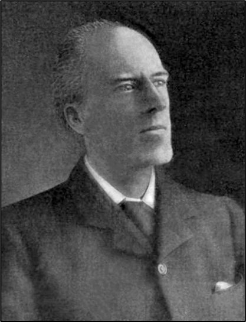
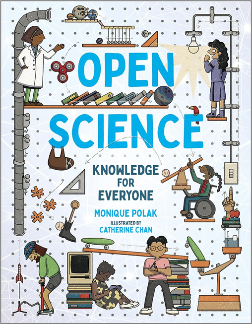
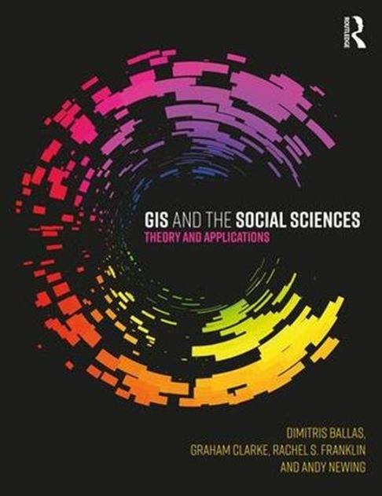
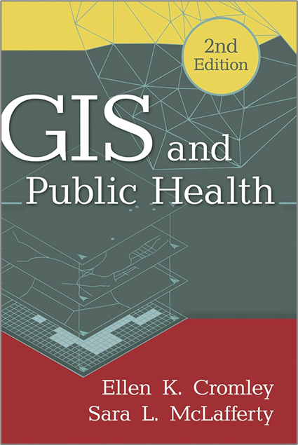

세 가지 사이언스의 융합과 오픈소스 프로그래밍 1
세 가지 사이언스의 융합
세 가지 사이언스의 융합
2025-12-30


찰스 체핀스(Charles Cheffins)(1807-1861)


원데이터: JSON
구조는 존재
구분 규칙({ }, [ ], :) 존재
기계가 파싱(parsing)하기 용이
완전한 비정형(자유 텍스트, 이미지 등)은 아님
스키마는 유연
관계형 DB처럼 고정된 컬럼 정의를 강제하지 않음
같은 데이터셋 안에서도 레코드마다 필드를 다르게 하거나 새 필드 추가 등이 용이
정형 데이터처럼 엄격히 표준화된 구조는 아미

EDA: 역사

(Karl Pearson)
(1857-1936)
영국

(Ronald A. Fisher)
(1890-1962)
영국

(Thomas Bayes)
(1701-1761)
영국

(John Tukey)
(1915-2000)
미국


샤를 조제프 미나르(Charles Joseph Minard)(1781-1870)
머신러닝: 주요 기법

데이터사이언스 과정: EDA 중심

https://medium.com/@ajaymaurya_72779/basic-questions-on-eda-analysis-for-data-science-ec61ddab61d6
데이터사이언스 과정
해들리 위컴(Hadley Wickham)

데이터사이언스 과정
해들리 위컴(Hadley Wickham)

데이터사이언스 경관

https://commons.wikimedia.org/wiki/File:Data-Science-Landscape.jpg


과학 혹은 철학 혹은 운동





오픈데이터: FAIR 데이터


https://cloud.google.com/apigee/docs/api-platform/tutorials/create-api-proxy-openapi-spec?hl=ko
오픈소스: 오픈소스 이니셔티브


https://www.technologynetworks.com/informatics/articles/repeatability-vs-reproducibility-317157

https://ttw-rtd.readthedocs.io/en/latest/reproducible-research/reproducible-research.html


https://practicalgeoskills.blogspot.com/2020/04/map-projections-meaning-and-examples.html


 PROJ.4 문자열: +proj=robin +lon_0=150 +x_0=0 +y_0=0 +datum=WGS84 +units=m +no_defs
PROJ.4 문자열: +proj=robin +lon_0=150 +x_0=0 +y_0=0 +datum=WGS84 +units=m +no_defs

주제도 유형


컬러


디지털 일반도





데이터와 오퍼레이션


벡터-기반 GIS 분석


래스터-기반 GIS 분석


다중분광센서

https://www.usgs.gov/media/images/spectral-bandpasses-all-landsat-sensors
다중분광센서

영상 조합

https://gsp.humboldt.edu/olm/Courses/GSP_216/lessons/composites.html


영상 분류


변화 탐지


변화 탐지

루크 올드-토마스(Luke Auld-Thomas)
“29일(현지시각) BBC와 Nesweek 등 외신은 미국 툴레인대 고고학 연구팀이 멕시코 남동부 캄페체주에서 마야인들이 세운 피라미드와 원형극장, 도로, 운동장 등 6,764개의 건축물을 발견했다고 보도했다. 이러한 연구 결과는 영국 케임브리지대 고고학 학술지 ‘앤티쿼티’ 최신호에 실렸다.” (2024년 10월 29일)

라이다(LiDAR)

https://www.zdnet.com/article/am-vs-fm-the-battle-brewing-in-lidar-technology/

공간적 자기상관

공간적 자기상관


{kind=link}